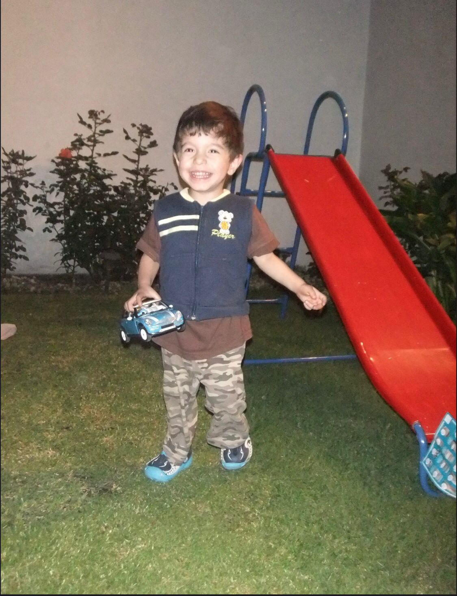

Amoooor, daily reminder 🥹🥹💗💗💗💗💗 Quiero hacerte el daily reminder amor mío. Pero sobre todo porque vi varias cosas que siento no son válidas ☹️☹️☹️☹️, amor mío tu eres la mujer más más hermosa de este planeta. Eres súper bonita amor, lo que tú sentiste cuando dije algo lovely por mi, yooo lo siento cuando tú lo dices pero lo siento a términos gugol. AMOOOOOR ES HERMOSO AMOR ES DEMASIADO EXTREMADAMENTE CUANDO TE PUEDES VER CUANDO DICES QUE ERES HERMOSA 😭😭💗💗💗💗 que efectivamente eres la mujer más más hermosa de este mundo que definitivamente eres the most beautiful woman in the world. Detrás de creep de una canción de Olivia hay mensajes muy feos amor mío, porque amor yo te amo tal y como eres. Tal y como eres bonita, hermosa, preciosa, linda, guapa, perfecta, pretty amor y sobre todo perfecta 😭😭💗💗😭💗💗💗💗 así debes amarte amor mío. Debes amarte y enamorarte físicamente de ti porque una vez que logras eso caes rendido por tu enorme corazón y tu bello soul. Amor mío cuando veo tu rostro solo veo la carita más hermosa y bella de esta tierra. Una carita tan bonita que nada es comparable con ella amor. Porque Dios mío, entras en esa hermosa categoría universal amor de mi vida, esa categoría universal de las cosas más bellas esa atracción que todos sentimientos no una atracción porque si, una atracción que nos insista a la inspección y al análisis, lo qué pasa con el arte las flores, la literatura, tu hermoso cuerpo, la pintura, la arquitectura. Amor mío esas cosas tan tan hermosaa amor que tú entras en esa categoría amor, only the most beautiful woman in the world puede compartir esa sección y nunca deberías comprarte con algo mortal y carnal como otras personas. Jamás debes hacerlo por varios motivos, porque ur the only most pretty beautiful woman in the world, solo tú tienes ese tittle. Pero tú belleza y atracción no se basa en solo tu belleza física de nutre de la belleza y pureza de tu alma y de tu corazón amor de ahí se nutre amor mío. Piénsalo es como la canela 🥹🥹💗💗💗🥹🥹💗💗💗💗 su parte exterior es wooow es belleza pura, es fuerte como tu, es algo hermoso y sublime, delicado y cute. Pero por dentro viene el verdadero sabor de la canela así como tú lo que hace que sea magnético es tu alma la belleza de la misma. Eres la mujer más hermosa de este mundo porque tú alama y tú coarzon son los más bonitos, puros, bellos y hermosos qué hay. De ahí se nutre y de ahí sale que seas y que poseeas el tittle de the most pretty beautiful woman in the world 😭😭💗💗💗😭😭💗💗 amor mío, respeto el hobbie del make up porque siento que todos tenemos esas conductas que no son correctas como Jeff bezos lanzar cohetes al espacio, yo fumo, tesla alimentaba palomas y tú te maquillas todos tenemos un hobbie sin sentido y cute. Porque es como si te dijiera que “haz más bonitas tus lilis” te vas a reír, porque. Cómo haces más bonita a las flores?? Cómo mejoras un DaVinci?? Cómo haces más bonita a Tamara?? Exacto no se puede porque alcanzan el punto Máximo universo amor, y es belleza universal y a pasear de eso les ganas a todo porque no hay nada más bello que tú y mucho menos alguien. Amor mío eres la máxima expresión de belleza, de dulzura, hermosísimo y preciosidad, amor mío neta me FASCINAS amor, eres the most pretty beautiful woman in the world, amor eres perfecta amor mío eres hermosísima eres súper bonita tanto que puedes y yo afirmo que no necesitas de maquillaje amor you’re so pretty without makeup amor mio, eres súper súper hemrosa amor eres súper bonita amor mio, tu eres el estándar y esteriotipo. Eres tan hermosa que ninguna esteriotipo es lo suficiente para que entres en el, porque una sociedad o unos capitalistas impusieron eso amor mio, porque solo las peronas que aprecian el arte como tú pueden demostrar y apreciar eso amor mio, porque tú eres la inscripción al arte mismo amor de mi vida, eres arte un poema tan sublime y perfecto escrito por la mismísima pizarnik amor mio. Eres tan bonita como las lilis y debes abrirte amor, las lilis están destinadas a abrir y exponer si belleza sin limitantes y eso quiero que pase contigo mi niña, porque nunca voy permitir que ninguna idea negativa llegue a esa hermosa cabezita amor mio. Eres sublime, hermosa, bonita, PREETY, beautiful, gorgeous, hermosa, linda y preciosa amor mio. Eres la luna y sol juntos y ninguna Estrella que s más hermosa que la luna y ninguna Estrella es más grande que el sol.

Te amo con todo mi corazón, el pensar que con kingsutgi puedo eliminar estas ideas saca la sonrisa de este niño💗💗💗💗💗💗
—Dave. O